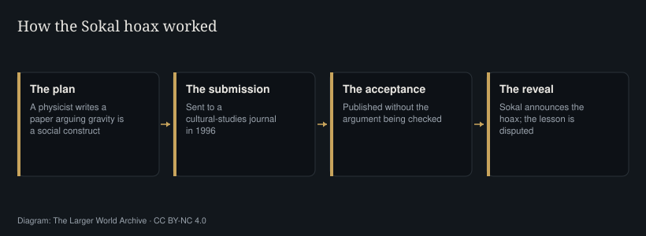

The hoax
In 1996 Alan Sokal, a physicist, submitted a paper arguing that gravity is a social construct, written to be nonsense. It was accepted by Social Text, and he revealed the hoax after publication.
Maps, diagrams and images

The arguments
Sokal and his allies argued it showed a failure of standards in cultural studies; critics argued the journal was not peer-reviewed in the usual sense and that the episode was used to discredit a whole field. Both are documented.
Documented: the submission and acceptance.
Documented: the reveal.
Documented: the responses.
Argued: the general lesson.
The label: documented.
Why it is in the archive
Because it is the cleanest demonstration that publication is not endorsement.
Open resources on this topic
- PapersOpen-access articles: DOAJ · PubMed Central · Internet Archive Scholar
- BooksPublic-domain and borrowable copies: Open Library · Project Gutenberg · Google Books · Internet Archive
Cite this page
Momin, S. (2026). The Sokal Hoax. The Larger World Archive. https://drsamonline.github.io/LARGE_GLOBE/sokal-hoax.htmlMomin, Sohil. “The Sokal Hoax.” The Larger World Archive, 2026, https://drsamonline.github.io/LARGE_GLOBE/sokal-hoax.html.Momin, Sohil. “The Sokal Hoax.” The Larger World Archive, 2026. https://drsamonline.github.io/LARGE_GLOBE/sokal-hoax.html.@misc{the2026sokal,
author = {Momin, Sohil},
title = {The Sokal Hoax},
year = {2026},
howpublished = {The Larger World Archive},
url = {https://drsamonline.github.io/LARGE_GLOBE/sokal-hoax.html},
note = {Last reviewed 20 November 2026}
}Last reviewed 20 November 2026 · Corrections policy · this page is not peer reviewed
What the hoax was, and what it was not
In 1996 the physicist Alan Sokal submitted a deliberately nonsensical paper to a cultural-studies journal, arguing that quantum gravity is a social construction. It was accepted and published. The point was not that the journal was stupid but that it had stopped requiring anyone to check whether the physics was right.
The distinction matters, and it is the one usually lost in retellings. Sokal's target was a specific failure mode — the use of scientific vocabulary as authority by people who did not understand it — not the humanities as a whole. He said so at the time, and the argument that followed was more interesting than the prank.
The archive includes it because the mechanism recurs: a journal's review process can be sound in form and hollow in effect, and the only test is whether someone with the relevant competence reads the submission. That test failed here, and it fails in other fields for other reasons.
Sources for this page
- Wikipedia, “Sokal affair” — the hoaxen.wikipedia.org
- Wikipedia, “Alan Sokal” — the physicisten.wikipedia.org
- Wikipedia, “Science wars” — the contexten.wikipedia.org
- Wikipedia, “Hoax” — the categoryen.wikipedia.org
- Archive.org — a paper on the Sokal affairarchive.org/details/arxiv-physics0601108
- Wikipedia, “Reproducibility”en.wikipedia.org